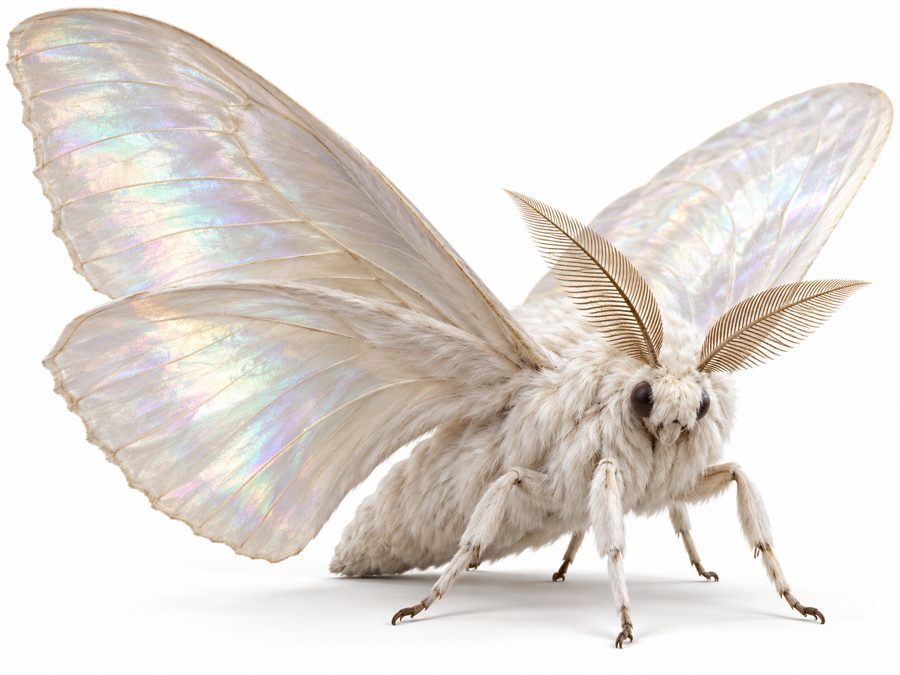
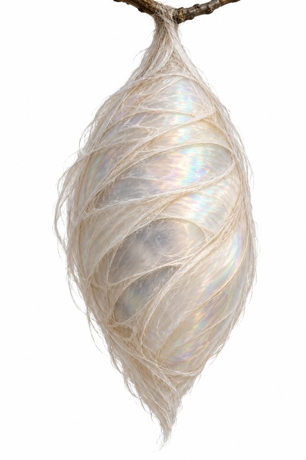

Luthorun
A plate-sized moth whose cocoon gives silk.
- Group
- Fiber and silk
- Tags
- silk
- Size
- About the size of a plate. The reference images are zoomed in for detail. Decided
- Body
- A fuzzy body, kept because it ties to the silk byproduct. Decided
- Wings
- Broad, pearl-white and iridescent. Decided
Silk
The cocoon gives the fine silk thread of the court. The finest thread is called Luthaevel, and Luthaevel is the cloth of regalia. Canon

